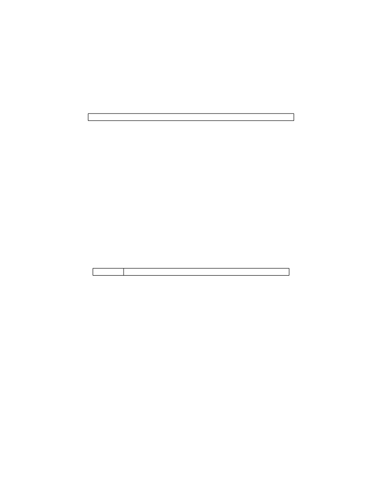

<table border="0" height="1453" width="1123">
<tr><td>
<div style="position:absolute; top:0; left:0;"></div>
<div style="position:absolute;top:74.119;left:132.145;"><nobr>
<span style="font-size:20.022;font-style:italic;">Volume II: RISC-V Privileged Architectures V20190608-Priv-MSU-Ratified</span>
</nobr></div>
<div style="position:absolute;top:74.119;left:971.067;"><nobr>
<span style="font-size:20.022;">61</span>
</nobr></div>
<div style="position:absolute;top:132.234;left:132.145;"><nobr>
<span style="font-size:20.022;">sepc is a</span>
<span style="font-size:20.022;font-weight:bold;">WARL</span>
<span style="font-size:20.022;">register that must be able to hold all valid physical and virtual addresses. It</span>
</nobr></div>
<div style="position:absolute;top:155.440;left:132.145;"><nobr>
<span style="font-size:20.022;">need not be capable of holding all possible invalid addresses. Implementations may convert some</span>
</nobr></div>
<div style="position:absolute;top:180.307;left:132.145;"><nobr>
<span style="font-size:20.022;">invalid address patterns into other invalid addresses prior to writing them to sepc .</span>
</nobr></div>
<div style="position:absolute;top:223.460;left:132.145;"><nobr>
<span style="font-size:20.022;">When a trap is taken into S-mode, sepc is written with the virtual address of the instruction</span>
</nobr></div>
<div style="position:absolute;top:248.327;left:132.145;"><nobr>
<span style="font-size:20.022;">that was interrupted or that encountered the exception. Otherwise, sepc is never written by the</span>
</nobr></div>
<div style="position:absolute;top:273.194;left:132.145;"><nobr>
<span style="font-size:20.022;">implementation, though it may be explicitly written by software.</span>
</nobr></div>
<div style="position:absolute;top:316.904;left:264.443;"><nobr>
<span style="font-size:14.628;">SXLEN-1</span>
</nobr></div>
<div style="position:absolute;top:337.845;left:544.337;"><nobr>
<span style="font-size:16.456;">sepc</span>
</nobr></div>
<div style="position:absolute;top:357.325;left:527.711;"><nobr>
<span style="font-size:16.456;">SXLEN</span>
</nobr></div>
<div style="position:absolute;top:403.406;left:304.474;"><nobr>
<span style="font-size:20.022;">Figure 4.8: Supervisor exception program counter register.</span>
</nobr></div>
<div style="position:absolute;top:316.904;left:845.687;"><nobr>
<span style="font-size:14.628;">0</span>
</nobr></div>
<div style="position:absolute;top:477.804;left:132.145;"><nobr>
<span style="font-size:21.942;font-weight:bold;">4.1.10</span>
</nobr></div>
<div style="position:absolute;top:477.804;left:219.847;"><nobr>
<span style="font-size:21.942;font-weight:bold;">Supervisor Cause Register (</span>
<span style="font-size:21.942;">scause</span>
<span style="font-size:21.942;font-weight:bold;">)</span>
</nobr></div>
<div style="position:absolute;top:535.245;left:132.145;"><nobr>
<span style="font-size:20.022;">The scause register is an SXLEN-bit read-write register formatted as shown in Figure</span>
<span style="font-size:20.022;color: #000080;"><a href="#" onClick="javascript:parent.GotoNewPage(72); return false">4.9</a></span>
<span style="font-size:20.022;">. When a</span>
</nobr></div>
<div style="position:absolute;top:560.112;left:132.145;"><nobr>
<span style="font-size:20.022;">trap is taken into S-mode, scause is written with a code indicating the event that caused the trap.</span>
</nobr></div>
<div style="position:absolute;top:584.979;left:132.145;"><nobr>
<span style="font-size:20.022;">Otherwise, scause is never written by the implementation, though it may be explicitly written by</span>
</nobr></div>
<div style="position:absolute;top:609.847;left:132.145;"><nobr>
<span style="font-size:20.022;">software.</span>
</nobr></div>
<div style="position:absolute;top:652.999;left:132.145;"><nobr>
<span style="font-size:20.022;">The Interrupt bit in the scause register is set if the trap was caused by an interrupt. The Exception</span>
</nobr></div>
<div style="position:absolute;top:677.867;left:132.145;"><nobr>
<span style="font-size:20.022;">Code field contains a code identifying the last exception. Table</span>
<span style="font-size:20.022;color: #000080;"><a href="#" onClick="javascript:parent.GotoNewPage(73); return false">4.2</a></span>
<span style="font-size:20.022;">lists the possible exception codes</span>
</nobr></div>
<div style="position:absolute;top:702.736;left:132.145;"><nobr>
<span style="font-size:20.022;">for the current supervisor ISAs. The Exception Code is a</span>
<span style="font-size:20.022;font-weight:bold;">WLRL</span>
<span style="font-size:20.022;">field, so is only guaranteed to</span>
</nobr></div>
<div style="position:absolute;top:727.603;left:132.145;"><nobr>
<span style="font-size:20.022;">hold supported exception codes.</span>
</nobr></div>
<div style="position:absolute;top:771.313;left:291.182;"><nobr>
<span style="font-size:14.628;">SXLEN-1 SXLEN-2</span>
</nobr></div>
<div style="position:absolute;top:771.313;left:831.684;"><nobr>
<span style="font-size:14.628;">0</span>
</nobr></div>
<div style="position:absolute;top:790.888;left:284.402;"><nobr>
<span style="font-size:16.456;">Interrupt</span>
</nobr></div>
<div style="position:absolute;top:811.732;left:319.527;"><nobr>
<span style="font-size:16.456;">1</span>
</nobr></div>
<div style="position:absolute;top:790.888;left:509.530;"><nobr>
<span style="font-size:16.456;">Exception Code (</span>
<span style="font-size:16.456;font-weight:bold;">WLRL</span>
<span style="font-size:16.456;">)</span>
</nobr></div>
<div style="position:absolute;top:811.732;left:566.226;"><nobr>
<span style="font-size:16.456;">SXLEN-1</span>
</nobr></div>
<div style="position:absolute;top:857.813;left:360.841;"><nobr>
<span style="font-size:20.022;">Figure 4.9: Supervisor Cause register scause .</span>
</nobr></div>
<div style="position:absolute;top:932.213;left:132.145;"><nobr>
<span style="font-size:21.942;font-weight:bold;">4.1.11</span>
</nobr></div>
<div style="position:absolute;top:932.213;left:219.847;"><nobr>
<span style="font-size:21.942;font-weight:bold;">Supervisor Trap Value (</span>
<span style="font-size:21.942;">stval</span>
<span style="font-size:21.942;font-weight:bold;">) Register</span>
</nobr></div>
<div style="position:absolute;top:989.652;left:132.145;"><nobr>
<span style="font-size:20.022;">The stval register is an SXLEN-bit read-write register formatted as shown in Figure</span>
<span style="font-size:20.022;color: #000080;"><a href="#" onClick="javascript:parent.GotoNewPage(73); return false">4.10</a></span>
<span style="font-size:20.022;">. When</span>
</nobr></div>
<div style="position:absolute;top:1014.519;left:132.145;"><nobr>
<span style="font-size:20.022;">a trap is taken into S-mode, stval is written with exception-specific information to assist software</span>
</nobr></div>
<div style="position:absolute;top:1039.388;left:132.145;"><nobr>
<span style="font-size:20.022;">in handling the trap. Otherwise, stval is never written by the implementation, though it may</span>
</nobr></div>
<div style="position:absolute;top:1064.255;left:132.145;"><nobr>
<span style="font-size:20.022;">be explicitly written by software. The hardware platform will specify which exceptions must set</span>
</nobr></div>
<div style="position:absolute;top:1090.784;left:132.145;"><nobr>
<span style="font-size:20.022;">stval informatively and which may unconditionally set it to zero.</span>
</nobr></div>
<div style="position:absolute;top:1132.275;left:132.145;"><nobr>
<span style="font-size:20.022;">When a hardware breakpoint is triggered, or an instruction-fetch, load, or store address-misaligned,</span>
</nobr></div>
<div style="position:absolute;top:1157.142;left:132.145;"><nobr>
<span style="font-size:20.022;">access, or page-fault exception occurs, stval is written with the faulting virtual address. On an</span>
</nobr></div>
<div style="position:absolute;top:1182.010;left:132.145;"><nobr>
<span style="font-size:20.022;">illegal instruction trap, stval may be written with the first XLEN or ILEN bits of the faulting</span>
</nobr></div>
<div style="position:absolute;top:1206.877;left:132.145;"><nobr>
<span style="font-size:20.022;">instruction as described below. For other exceptions, stval is set to zero, but a future standard</span>
</nobr></div>
<div style="position:absolute;top:1231.746;left:132.145;"><nobr>
<span style="font-size:20.022;">may redefine stval ’s setting for other exceptions.</span>
</nobr></div>
<div style="position:absolute;top:1274.897;left:132.145;"><nobr>
<span style="font-size:20.022;">For misaligned loads and stores that cause access or page-fault exceptions, stval will contain the</span>
</nobr></div>
<div style="position:absolute;top:1299.766;left:132.145;"><nobr>
<span style="font-size:20.022;">virtual address of the portion of the access that caused the fault. For instruction-fetch access or</span>
</nobr></div>
</td></tr>
</table>
